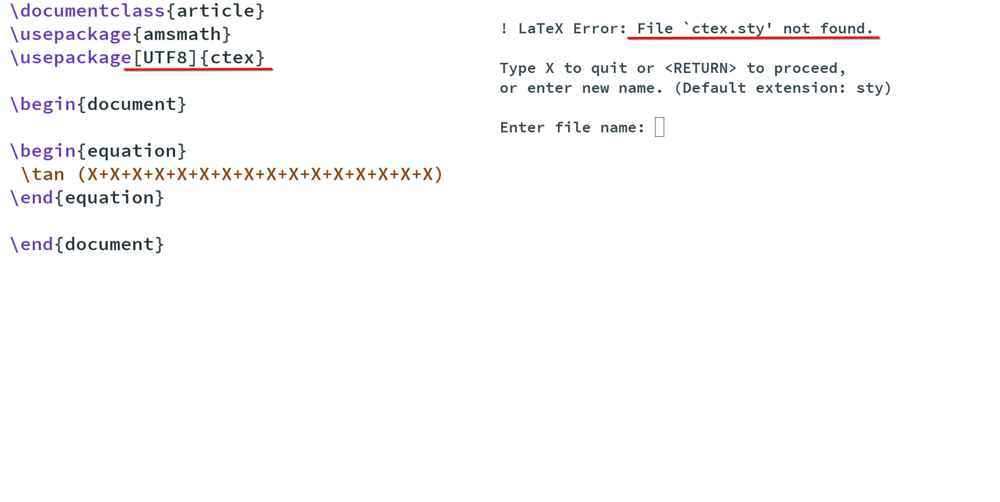
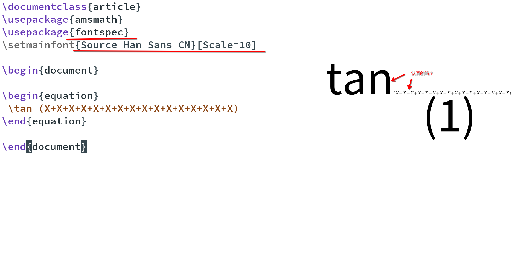

Table of Contents
1. 含金量最高的一集之在org-mode的LaTeX片段的equation写中文
1.1. 需求效果
我很希望可以通过 LaTeX 或 inline LaTeX 等的工具，表达出 带有中文utf-8字符的LaTeX片段
word可以是可以，确实做到了 带有中文utf-8字符的LaTeX片段 ，但它并不 TeX，也并不好自定义。
1.2. 调试经历
目前来说，在 LaTeX 里，可以支持中文的一共有 3 个宏包 (据我个人所知)
\usepackage[UTF8]{ctex} % 问题: ctex.sty was not found
\usepackage{fontspec} % 问题: 部分字符固定死了字体大小
\usepackage{xeCJK} % 我没测试: xeCJK我没测试
但前两者 ctex 和 fontspec 在 我个人的环境下，想写带有中文utf-8字符的LaTeX片段 均出现不同的问题
比如 ctex 会出现 ctex.sty was not found 的问题

比如 fontspec 会出现 fontspec你就用吧等着到时候中西文字体一大一小就等着吧 的问题

1.3. 效果代码
相当于对LaTeX的渲染程序进行了排列组合
方案
| 序号 | 项说明 | 配置方案 |
|---|---|---|
| 1 | 字体 | Souce Han Sans CN(思源黑体CN) |
| 2 | 渲染 | pdf 转 png |
| 3 | 图片 | 固定白色背景 #FFFFFF |
| 4 | 字体大小 | 9pt -density 90 |
优点
- 无视fontspec包的定死字体大小的限制，强制渲染指定字体大小9pt的LaTeX片段
缺点
- 方案是pdf转png，相比于svg来说可能较吃性能，但png兼容性更好
- \\( 需手动将光标放在此上下文范围内，然后执行函数才能渲染 \\)
(add-to-list 'org-preview-latex-process-alist
'(xelatex-chinese
:programs ("xelatex" "convert")
:description "pdf > png"
:message "you need to install the programs: xelatex and dvipng."
:image-input-type "pdf"
:image-output-type "png"
:image-size-adjust (1.7 . 1.5)
:latex-header "\\documentclass[11pt]{standalone}
\\usepackage{fontspec}
\\setmainfont{Source Han Sans CN}
\\setsansfont{Source Han Sans CN}
\\setmonofont{Source Han Sans CN}
\\usepackage[usenames]{color}
\\usepackage{amsmath}
\\usepackage{extpfeil}
\\pagestyle{empty}"
:latex-compiler ("xelatex -interaction nonstopmode -output-directory %o %f")
:image-converter ("convert -density 90 -background '#FFFFFF' -flatten -quality 100 %f %O")))
(defvar variable-latex-fragment-left-bound "\\\(" "[变量]: latex-fragment的左边界")
(defvar variable-latex-fragment-right-bound "\\\)" "[变量]: latex-fragment的右边界")
(defun kivnn/org-latex-preview-format ()
"渲染中文LaTeX片段之前的格式化"
(interactive)
;; 找到左边界
(let ((thing (thing-at-point 'line t)))
(if (and thing (string-match (concat variable-latex-fragment-left-bound ".*" variable-latex-fragment-right-bound) thing))
(search-backward variable-latex-fragment-left-bound nil t)
(message "no such equation, please check again...")))
(forward-char 2)
(delete-all-space)
;; 找到右边界
(let ((thing (thing-at-point 'line t)))
(if (and thing (string-match (concat variable-latex-fragment-left-bound ".*" variable-latex-fragment-right-bound) thing))
(search-forward variable-latex-fragment-right-bound nil t)
(message "no such equation, please check again...")))
(backward-char 3)
(delete-all-space))
(defun kivnn/org-latex-preview-engine ()
"渲染中文LaTeX片段"
(interactive)
(let* ((latex-code (thing-at-point 'line t))
(is-utf8 (and latex-code
(string-match (concat variable-latex-fragment-left-bound ".*" variable-latex-fragment-right-bound) latex-code)
(string-match-p "[^\x00-\x7F]" latex-code))))
(if s-utf8
; 如果包含 UTF-8 字符，就使用 xelatex-chinese 引擎
progn
(setq org-preview-latex-default-process 'xelatex-chinese)
(message "目前使用了xelatex-chinese引擎渲染此LaTeX片段"))
;; 如果不包含 UTF-8 字符，就使用 dvipng、dvisvgm、imagemagick 引擎
(setq org-preview-latex-default-process 'dvipng)
(message "目前使用了org-mode默认的dvipng、dvisvgm、imagemagick引擎渲染此LaTeX片段"))
(org-latex-preview)
;; 每次执行完毕后都恢复为 dvipng、dvisvgm、imagemagick 引擎
(setq org-preview-latex-default-process 'dvipng)
(message "Creating Latex previews in section...(and recover dvipng...) done.")))
(defun kivnn/org-latex-preview ()
"无视fontspec包的定死字体大小的限制，强制渲染指定字体大小的LaTeX片段(才发现这个函数含金量这么足)"
(interactive)
(kivnn/org-latex-preview-format)
(kivnn/org-latex-preview-engine))
(define-key org-mode-map (kbd "C-1919810") 'kivnn/org-latex-preview) ; 无视fontspec包的定死字体大小的限制，强制渲染指定字体大小的LaTeX片段
我才不会说这是我折腾 50+ 个小时后 _(xз」∠)_一 最后还是回到了最初的此函数的起点呢 (#`Д´)ﾉ